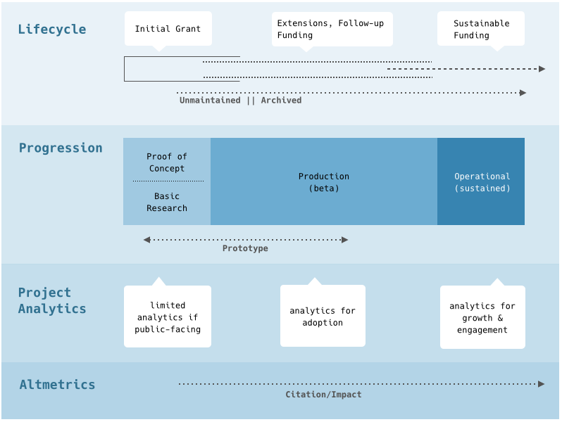

Editors: Soren Scott
Abstract:
IN DRAFT June-July 2016
Comments and feedback are encouraged until July 22, 2016.
To comment, please use one of the following options, in oreder of preference:
gh-pages branch in this repository. Information on the structure is available. (This is not the preferred option.)This work builds on the criteria developed by the Software Sustainability Institute (Jackson et al. 2011) and its application, and expansion, in an evaluation framework, developed through ESIP in collaboration with NASA AIST, to verify Technology Readiness Levels (TRL, NASA 2012) in 2015. The framework was used during a pilot evaluation effort (Burgess 2016, Graybeal 2016) over the course of that autumn.
Community discussions around the criteria and ESIP’s larger interest in assessment as a mentoring activity, instead of a verification activity, led to this effort to revise the assessment criteria to better fit with those education goals as well as certain structural concerns with the existing criteria.
The guidance outlined here is intended intended to cover a broad range of research software concept.
The guidance developed here is intended for any research software or research code output or deliverable. We are looking beyond the traditional understanding of “science code” to consider any code developed through a grant funding mechanism. These codes may not directly speak to a science outcome; however, they are valuable when considered more broadly for provenance, for reusability and reproducibility.
Figure XX. Research Funding Lifecycles.
Figure XX provides an idealized overview of research grant funding as it relates to software project lifecycles. It is not intended to describe the complete funding landscape or the variety of ways a research software project could be positioned along a funding or maturity progression. For the purposes of this document and the guidance provided, we are noting the expectations of project or code maturity and the expectations of what is appropriate to assess along those progressions based on those maturity expectations.
Note that Fig. XX does not include maturity levels. Code maturity and project maturity, identified as some set of characteristics or through longevity, are not linear. A project can start with a high level of code maturity in an initial proof of concept phase. Project maturity, often presented as governance patterns similar to traditional open source projects, is the same. And improvements in both can occur within the lifespan of a single grant rather than through a series of grants. Here we see a potential mismatch between how funding agency may assess and categorize a project and the realities of developing software. Nor does it address mismatches between maturity, of either kind, and the focus on project growth through new research or feature implementations to meet research goals or the realities of software meeting community needs without necessarily meeting code/project maturity goals. These maturity markers are indicators of project health that we strongly support but not to the detriment of the larger goals of providing product that meets a community need and is adopted.
As diverse as research software projects are, there are two overarching categories: code/software intentionally developed for reusability and adoption and code/software developed for highly specific project needs. Neither option negates the recent requirements for openness; however, the methods for achieving those requirements and expectations around code or project maturity are different. The guidance here outlines the community recommendations for openness to support both categories. For projects developing code or software not intended for reuse and adoption, the focus for assessment is on code maturity, documentation and preservation or publication. We should note, as well, “not intended” reflects stated project milestones, sustainability and community engagement activities per the funded proposal.
We are focused here on code/software developed by a research group. For the purposes of assessment, we exclude software products reused by a research group from discussions of code maturity assessment while noting its value in assessing project maturity. Or, more specifically, we support a research group’s decision to reuse a current, outcome-appropriate technology over reimplementing a similar technology but do not consider the reused technology an assessment target itself. A simple example is developing modules for an existing web publication framework instead of developing a new framework.
Related, should a project employ an existing technology to support the publication or release of a research object that is not code or software, that technology again would not be considered during the assessment of the research software or code. A very broad example of this would be developing datasets and providing those publicly through ESRI’s ArcOnline platform. A project assessment would consider the datasets but not ArcOnline in this case. However, guidance for quality and maturity for other research object types, such as datasets or ontologies, is beyond the scope of this document.
Analytics and altmetrics are including here to highlight two aspects of analytics for assessment. First, projects at different stages of the lifecycle are characterized by different outcomes and those outcomes may not occur within a specific funding period. Second, we are focusing our guidance on those activities that are actionable by a research group to meet their maturity goals. The success of these activities may be, at least in part, demonstrated through analytics and altmetrics. Understanding how those metrics relate to the funding cycle timelines is necessary before including these in an assessment process focused on activities within a cycle. We suggest caution, then, in when and what is being measured in these areas without further research.
Our focus on assessment for guided educational activities as well as assessment for verification encompasses a wide range of stakeholders. Table XX outlines the main stakeholder communities and related use cases.
Table XX. Stakeholder Use Cases
|
Stakeholder |
Use Case |
Outcome |
|---|---|---|
|
Funder |
As a funding agency, we're interested in evaluating the software projects we fund. |
A functional evaluation system based on accepted metrics. |
|
Project Manager, Principal Investigator (manager in practice) |
As a manager, I’m interested in using the rubric/progression as a learning tool to help improve the development practices in my research group. |
A checklist or informal assessment to help the research group meet funder's expectations and to determine next steps for training or related activities in the research group. |
|
Principal Investigator |
As a PI, I would like a tool to assess our progress and ensure we’re meeting our funder’s expectations for a software project based on the readiness level stated in the original proposal and as defined by the funder. |
A checklist or informal assessment to help the research group meet funder's expectations (or participate in a formal assessment) and to determine next steps for training or related activities in the research group. |
|
Science Software Developer, Researcher Who Codes |
As a science software developer, I’m interested in using the recommended practices to improve my own workflow and skillsets. |
A checklist or mentoring activity to help guide me towards training options to meet my research goals and skillsets. |
|
Developer |
As a developer, I would like community-supported guidelines to support requests to change our current dev team practices. |
A checklist or informal assessment to encourage my manager or PI to allow the development team to adopt appropriate practices. |
|
Grad Student, Post-Doc, Researcher interested in continuing code education |
I’ve taken the introductory courses and want to continue to improve my skills but don’t know good next steps. I’d like guidance on next steps given my skillset. |
A checklist or mentoring activity to help guide me towards training options to meet my research goals and skillsets. |
|
Research Community |
We want to provide educational materials or other support for community members to meet their goals re: research software implementation and career growth. |
Develop and maintain guidelines for technology assessment and the framework for using those as educational tools. |
We must also understand that the research software projects are undertaken by a variety of research groups with varying degrees of resources available. These range from well-supported institutions with dedicated developer teams to PIs with only part-time developer support or small teams of graduate students. And team members have varying levels of experience related to software development. With that understanding, we have structured the guidance to provide worthwhile and concrete actions to improve development practices for both code and project maturity within a research group’s current resource limitations.
NOTE: Although we outlined several stakeholders, we are focusing on developing guidelines that are accessible to principle investigators as the stakeholder group serving as intermediaries between funding agency requirements and project participants. As such, we are intentionally providing current examples and current terminology in the guidance. Removing that terminology can obscure the concept that hinders readers from searching for and finding relevant information. It is our opinion that this does not serve any of the stakeholders well.
The guidance section is structured around high-level themes, principles in support of those themes and more detailed guidance and references. Where possible, we refer to current industry or research community practices and recommendations. Research code, in itself, is not special as code; however, as an artifact of research funding, it comes with additional burdens for supporting reproducibility, publication and preservation.
Some aspects of code or project maturity may not relate to every type of software or code activity. Table XX describes the software types we considered when developing these guidelines. Where necessary, additional guidance is provided for a specific type if the general guidance neglects some aspect important for that software type.
Table XX. Code and Software Categories.
|
Software Type |
Description |
|---|---|
|
Processing scripts |
Code developed for one-off processing or other project-specific activities, not generally intended for adoption and reuse. |
|
Notebooks* |
|
|
Module/library/command line interface (CLI) |
Packaged or buildable codebase, usually serving a specific purpose, often intended for adoption and reuse. |
|
Plugin/extension |
Packaged or installable software provided as a component of another piece of software. |
|
Desktop Application (GUI) |
Installable software developed for use on a desktop with a visual interface. |
|
Web Application |
Software deployed to a web server with functionality provided through a visual interface. |
|
Web Service |
Software deployed to a web server, providing data access or other functionality through a Web API. |
* Notebooks are often not code products and can serve as documentation, for example. As such, guidance is included pertaining to notebooks in those secondary roles.
The guidance provided below strives to be language- and platform-agnostic. Wherever possible, the examples provided are not an endorsement of a language or product and are intended solely as examples of the larger concept.
Finally, while we strongly support open science and the principles of accessibility, reproducibility and preservation of research software and code, we recognize the need to remain open to the resource limitations, experience and differing needs of the community. Choice of language, choice of platform, choice of tools — these are driven by the specific research and community needs rather than any dogmatic adherence to a particular philosophy.
Sustainable code deals with the characteristics that make source code maintainable over time and as contributors to it change.
At its most basic, this simply means that text of the code is formatted in a clean and consistent manner throughout the codebase. Function (method) names and parameter (variable) names follow a standard structure such as CamelCase.
A code style guide describes the formatting conventions preferred within a language community or within a research group. Other organizations, such as Google or Mozilla, also publish style guides for different languages. The key is in selecting a style guide and consistently applying it.
A linter is a small utility used to check for style discrepancies and other potential issues in source code. These can be integrated into a preferred development environment, such as the vi or emacs text editors or into a GUI-based IDE like Eclipse. Using a linter catches syntax or formatting errors quickly and conveniently.
These are language dependent, for example, Python’s Pylint, Javascript’s JSLint or Oracle’s Java guide.
Once an automated testing system is in use for a project, ensure that linting is one of the tests included. Often, this is included in continuous integration processes. See Tested below.
Regardless of whether a codebase is open sourced, ie accepting outside contributions, having a code style guide for your research group or for a project is encouraged. Emphasizing clean code practices aids in maintenance during active development or during long-term support. Code is the interface for developers so maintaining clean code over the lifespan of a project and as contributors change is encouraged.
Use language and module-defined exceptions in most cases. Catch specific errors and handle those appropriately for the software. Do not publicly expose full stack traces in any operational environment.
[Note: Considerations for Jupyter or other notebooks for code?]
Software (or code) versioning is important for open sourced code and for research activities related to citation, reproducibility and provenance.
Any code should be versioned in a version control system of your choice, ie, git, Apache Subversion, or Mercurial. It is, for individual researchers or local teams, not critical which system you choose so long as it’s being used. For code or software intended to be publicly released and released for adoption, it is important to note that, at the time of this document, git-based systems are widely available and widely used.
These repositories do not need to be public to start a project or during active development. VCS’s can be run locally, ie. installing git on your laptop, on a private system for local team development, using a third party VCS system such as BitBucket or GitHub that offers private repositories or through larger institutional systems.
When considering a VCS, consider the funder’s delivery and assessment requirements. Code repositories can be migrated from one VCS to another, they can be forked or cloned and, in the process, the repository can become decoupled from issue tracking systems or other related structure that are part of an assessment. See Governed and Code as Research Objects for information on related guidelines. We note this issue, and it is unresolved for distributed VCS,
Note that versioning is not a replacement for backups.
For code that is intended for adoption and ongoing maintenance, implement a versioning scheme. A versioning scheme, such as Semantic Versioning or the GNU preference, here refers to the release version used in packaging and generally offers major and minor numbers, for example, “version 1.2” has a major version number of 1 and a minor number 2. This process gives adopters, using packaging tools or other automation tools for managing dependencies, a way to more effectively manage those dependencies and a way to manage those dependencies within their development cycles.
See Documented for related activities.
Depending on the version control system in use, use tagged releases. A release is basically a specific commit in the code repository that meets some milestone conditions (defined by the project) and is stable (or not yet stable but released for beta testing). This provides adopters both an indication of when to upgrade to a stable version and, when combined with release notes (see Documented), some understanding of the effort needed to incorporate that new version into their own codebase or workflows.
The method for delivering the software depends on the project requirements. For software projects implementing desktop GUIs, for example, pre-built installers may be made available. For other projects, the preferred method may be providing scripts for automated build tools and installation instructions.
Indicate what system is used to perform the build and provide configuration files or related information. For some languages, builds are described as package installs.
For dependencies that aren’t installed as part of the build, provide information about those requirements and procedures. Otherwise, use the dependency management of your selected build tool to ensure any required dependencies are installed during the build process.
If your software has optional dependencies, indicate that and provide installation information. Note what features or capabilities are supported by each optional dependency.
In some languages, packaging tools can provide binaries that serve effectively as installers. Consider providing this option if it meets project goals and community practices for that language or your target audience.
For software delivered as an installer, provide the language-specific configurations and tool information to generate a new installer. (This assumes the code is released as open source.)
Provide an installer, tied to a versioned release, for any desktop GUI. Indicate which operating systems are supported and provide an installer for each.
Whenever possible, include an uninstaller or provide documentation to allow someone to perform a clean uninstall of the software.
Note that systems can be delivered as runnable containers, Unix/Linux distributions or other options. These prepackaged options (not to be confused with Python packages) should follow recommended security and creation guidelines as provided by the platform used.
Testing provides numerous benefits throughout the code or software lifecycle like basic quality control, verification of builds or installation, and effective and efficient means of assessing contributions to the code base from internal team members or external contributors. In a well-designed test, you are setting the expectation of success and writing your code to meet that expectation so it is documenting intent and providing a means of verifying that intent as the code changes.
Testing is a development style (test driven development or TDD) describing a workflow for coding. It allows for incremental design and can help create and maintain a clean codebase (see Sustainable Code). It sets expectations for the development and for adopters.
Tests, like documentation, are only usable if kept up to date. A reasonable criteria for adoption is that a code base does not include failing tests and certainly not failing tests that have been in the code for a long period of time. Code coverage can promote unsustainable practices; we recommend, if nothing else, testing key aspects and integrations. This includes testing for success states as well as exceptions or exceptional conditions.
When possible, limit the use of external resources as inputs for the tests. Use mocking or include test infrastructure to build database dependencies or similar tasks. Tests should be as realistic as possible with regards to the system and with an eye towards efficient testing. Related, mocking allows tests to be developed for conditions that may be difficult or impossible to repeat from an external system.
Continuous integration is a development process that allows developers to commit small, discrete changes (bug patches or a new feature), into a shared codebase in a way that doesn’t “break the build” for other members of the team. It is a way to enforce code quality, (code isn’t merged into the main branch if tests fail), a way to avoid large merge issues (conflicts in the code submitted by two developers), catch integration bugs early in the development process and provide a process for acceptance testing in reproducible environments. Common tools include Jenkins, Circle CI and Travis CI which can be integrated into a GitHub workflow or, depending on the tool, run in a locally-hosted environment.
Note that continuous integration relies on several of the concepts outlined in this document before it can be implemented. It is not limited to simply unit testing — it assumes version control and versioning, a test suite, and automated builds.
Tools such as Selenium provide options for automated testing against web interfaces and across browsers.
These guidelines are intended for any code or software that provide web services or data for consumption by other platforms; however, we are mostly focusing on the web application/web service projects.
Interoperable services fall under the same guidelines for performance and stability. See Usable for information.
Use community standards or conventions for data and metadata formats as well as the web services delivering those data.
Ensure that the data is usable by validating the data format during testing, for example, ensuring that an ISO 19115 file is valid XML.
Ensure that the web service is valid. Often this means validating a capabilities document against the schema provided by the standards body or through a web validator (CWICSmart for OpenSearch, the OGC Web Validator). At a lower level, ensure that the web service returns valid HTTP status codes and uses them for their intended purposes. Verify that content headers, especially those related to language and character encodings, are present and correct. Include service validation as part of the test suite for any generated service.
Ensure that the web service is complete with regards to the goals and use cases of the project.
Indicate, in the web API documentation for a service, that the service has been validated and the validation method, and that it is valid.
We note that often the development of systems supporting interoperability include external frameworks or platforms that are integrated into the project system. Given that these guidelines are intended only for code and software developed by the project team, some of the above may not be feasible.
See Documented for API documentation discussions.
Whenever possible, use open standards for data inputs and outputs.
Data dictionaries for each appropriate data output is provided in the documentation.
If implementing a standard that supports it, provide codelists or controlled vocabularies.
Provide ontology or vocabulary services. Every collection and concept/term published online should have a persistent, dereferencable URI and a definition.
If providing RDF or JSON-LD formats (or other related formats), provide the ontology.
Usable software meets the needs of the communities it has been developed for. Ideally meeting those needs matches the goals of the project.
See Sustainable Code for guidelines regarding the usability of code.
For desktop GUIs, this often means compliance with recommended design patterns for an operating system (Apple OS X Human Interface Guidelines) or for the interface toolkit of a programming language (Tkinter for Python or Swing for Java).
[If anyone feels that mobile apps should be included, add comments as necessary to this section.]
[Likewise for notebooks.]
For plugins or extensions, the interface components, such as forms and menus, conform to the design of the parent GUI. If the parent platform provides guidelines for extensions or plugins, the extension follows those guidelines (QGIS: Developing Python Plugins).
For web applications, the interface design depends on the goals of the project. Web interface design is not as constrained as desktop GUIs, nor do we want to impose visual design preferences here. However, for research groups with limited resources, consider using an existing framework, whether an extensible content delivery framework (ie, CMS or portal) or a more generic front-end framework (Bootstrap or Foundation).
When assessing web applications, visual design is important only as it helps or hinders the functionality of the site. Unless a stated research goal involves developing a new interaction method, use common interface designs.
Provide clear labels and easily identifiable means of accessing help. Apply styles consistently across the application. Provide a style guide for visual styles, for example the USDS 18F Web Design Standards (advanced option and more for those projects developed for adoption).
[Really]
Responsive design adapts an application’s layout based on the screen size (mobile, tablet, desktop) without requiring support for multiple application versions.
Progressive enhancement adapts the supported features of the application based on the detected device. In practice, this means adjusting functionality based on slow connections, prevalence of feature phones (instead of smartphones) in the community being addressed, or other concerns related to the execution of Javascript code.
This depends on the stated goals of the project and requires an understanding of the community needs before implementation.
Web accessibility guidelines provide information to help develop web sites and applications that are open and inclusive for people with a range of abilities. Visit the W3C’s Web Accessibility Initiative (WCAG, WAI-ARIA) and the U.S. GSA’s Section 508 guidelines.
These guidelines discuss structural concerns, for example semantic and well-structured HTML to support screen readers, and navigation or interaction requirements, such as keyboard bindings. We consider semantic and well-structured HTML in a similar context to that described in the Sustainable Code section, namely that it is beneficial to to meeting guidelines related to clean, well-structured code and is not considered an onerous or additional burden.
For web applications supporting dynamic mapping functions, try to use mapping libraries that include support for accessibility whenever possible. We note that support for colorblind users, represented only in data color schemes only, does not meet the minimum expectations for supporting web accessibility.
Project websites should also follow web accessibility guidelines.
Front-end frameworks and libraries have greatly improved cross-browser support, but it’s still important to ensure that the web application functions as intended across any and all browsers supported by the project.
Sometimes, project goals and community needs may require supporting older browser versions. In this case, state the supported versions and take steps to meet those requirements safely. Progressive enhancement principles can be considered to provide equivalent functionality for users limited to older browser versions and users using current versions.
The opposite may also hold true, where a research goal is to develop a proof of concept or prototype application using cutting edge functionality that may only be supported in certain browsers. In this case, progressive enhancement is not necessary but the project documentation and web application should indicate that limited support clearly.
API design is a usability concern. As with other areas, an API should be clear and legible, with meaningful names and using the RESTful design pattern (Fielding 2000). See Interoperable for guidance on implementing community standards, understanding that those standards may not be RESTful or conform to the conceptual models found in Web API documentation platforms. For the purposes of assessment, correct implementation of the community standard outweighs any RESTful recommendations.
Carefully consider interface design choices related to an individual’s permissions and access selections. These characteristics, related to layout, label text and other details, are included in general web interface guidelines but they are important to highlight here due to privacy concerns. Permissions and access options should not result in unexpected behavior from the viewpoint of the individual using the platform.
For open or public codebases, this gives potential adopters an understanding of where the project is in its lifecycle. This can be as simple as adding a note stating that the source code is under very active development (high rate of commits, known breaking bugs remain, or rough interface), the source code is not being maintained or is in a reasonably stable in-between state.
Please refer to Governed for managing contributions.
Simply put, provide potential adopters of the public-facing system information about the reliability and performance of that system.
For web services, include limitations for requests (rate limiting) and other policies related to automated access. This gives adopters guidelines for developing clients safely, ie. they understand the system limitations and can work within them, and gives adopters of the system some indication of system limitations when taking the deployment requirements into consideration. It also gives you, as the maintainer of a system, a clear process for dealing with violations of these limits.
For web applications and services, provide information regarding uptime, methods for receiving outage notifications, expected response times for responses to support requests.
These service level qualities are dependent on effective monitoring. Providing service level quality information is not, in itself, enough to build and maintain trust in a system. See Monitoring below.
Monitor your systems for security and infrastructure (anomalous activity), for service level quality metrics and performance (uptime, service response times), for sustainability metrics (growth, retention, service usage). Note that these are different concepts and use different platforms, for example, Nagios for infrastructure, the Elastic Stack (ElasticSearch, Logstash and Kibana) for log analytics, and Google Analytics for application events. You may also be able to take advantage of solutions provided by your cloud resource provider.
The level of monitoring depends on where in the project lifecycle you are and what expectations you have for adoption and use. For production (beta) or operational systems, monitoring is not considered “nice to have” as access issues, performance issues or other issues affecting the use of the system has a negative impact on the trust of the system — instability or persistent performance problems drives people and potential adopters away.
For algorithm development or similar code, provide benchmarks with comparisons to similar algorithms. Describe the benchmarking process. We note that this activity can be the topic of a research paper in certain domains. References to the paper and related research objects can be provided instead of a detailed write-up in the documentation. Cite it appropriately (see Publication and Citation).
Documentation is important across project areas and audiences. Research code and software has a higher documentation burden. This is generally seen in two areas: the temporary and variable nature of the workforce and the expectations of reproducibility and contributions to the larger research community. Both can be mitigated by improved source code and project documentation where an effective knowledge base protects the project against unexpected churn and aids in onboarding new participants.
When in doubt, a good rule of thumb is to document things that can’t be found in any dependency or framework documentation and that might appear counter-intuitive to another developer, even if it’s you in six months.
[Update any section or suggest new for notebooks as documentation in any way.]
Comment blocks are included in the source code. Minimum documentation describes methods and the input and output parameters. In addition, we recommend code comments to describe sections that may not be clear, for example, bug patches that appear counter-intuitive or business decisions that shouldn’t be modified without clear external reasons.
As with the code itself, the comment style should follow the chosen style guide or language conventions.
In this case, the API can refer to the methods and properties of the codebase or a web API. Document generators, such as Sphinx (Python) or Codox (Clojure), expect explicitly formatted comment blocks within the code or as standalone files.
For web APIs, especially RESTful APIs, use a documentation specification geared to that such as Swagger (or Open API Initiative), RAML or API Blueprint. In some cases, document generation tools may support the API specification so check that documentation for possible integrations. Keep in mind that public web API documentation does not replace source code documentation as one serves adoption for client development and reuse and the other supports further contributions.
When using a documentation generator, describe the tools and process for generating the documents.
For traditionally open sourced projects, this description is related to other contribution guidelines and offers contribution options beyond code.
Like the code, the generated API documentation is versioned and maintained in a VCS. API documentation can be hosted under the project website or an external documentation host such as Read the Docs. If possible, link the documentation version with a code release (for reproducibility, preservation and community support).
This documentation is related to those information items that describe how to deploy the code or software. Reuse and adoption here refers to the developer community but it can also benefit preservation needs.
Current practice is to provide certain documentation through Markdown or reStructuredText. Expected files include a project-level README, LICENSE, and INSTALL and may include a code of conduct, CONTRIBUTING, AUTHOR or other files common to the GNU recommended file structure.
Describe the build procedure if building from the source code. Describe the installation process if providing binaries. Be sure to include any dependency requirements, including version information. Also include system requirements, including version information.
Often, build/installation details are provided in the source code’s README or INSTALL files.
The documentation describes the tool used for testing and how to execute tests. Often this is included as a post-install or post-build step to demonstrate that that process was successful. For automated deployments where the configurations are provided, safely, with the code base, indicate that tests are automatically run.
For source code in a VCS and with a defined versioning scheme, provide the versioning scheme used in the documentation. This is most likely included in the CONTRIBUTING file.
Clear and complete release notes provide adopters some understanding of how a major or minor release may affect their own systems and workflows.
For preservation and archiving concerns, provide these items in the code repository or other documentation. Consider a future scenario in which a potential issue with a generated dataset comes up and, while the code is accessible (locatable and viewable), it may not be possible to run. Release notes in these situations provide avenues for understanding when and where the issue may have occurred.
Here we are discussing documentation guidelines for higher level guides for user or developer documentation, such as how-to guides, quick start guides or tutorials.
Any restrictions or constraints for a particular method, request, or process is included in that item’s documentation. This includes file size limits or rate limiting for web APIs.
Quick start guides are provided to provide any user an introduction to the code or software. The selected example should reflect a normal interaction, provide a description of common possible errors and how to respond to each, and a successful outcome. If warranted, provide a simple dataset for this demonstration.
Developer Documentation
Note that developer documentation can simply be API documentation for modules/libraries, command line interfaces, or web APIs.
For command line tools and web APIs, all input and output parameters for each command or request are defined, including default values. Every command or request is likewise described.
This documentation is aimed at users of research software, whether a desktop GUI, plugin/extension, or web application.
The software documentation is complete. It describes every possible action with annotated screenshots of interfaces and step-by-step processes. This includes possible errors and recovery options.
The images and method or parameter names are up-to-date, ie they match what the user sees in the software.
Provide this documentation in a manner that is searchable through a web search engine (preferred) for both desktop GUIs and web applications. For desktop GUIs, provide documentation in a manner supported by the application or the operating system.
This is the highest level documentation and often the first information made public. It can, in some ways, be considered pre-registration. This documentation is maintained on a project website separate from the code.
This website should include the grant award numbers and agencies, initial project milestones, a description of the project and the expected software or code deliverables and a listing of project team members.
As the project continues, include reports, articles, conference presentations or other materials on the site. If possible, include testimonials from satisfied users.
Include links to the project source code or software installers and documentation.
Provide copyright information, commonly in the footer of the project site. Consider licensing the project web site content through Creative Commons or under the license of the department or organization.
Any code or software should be developed following the current recommended practices for the systems being used. Security must be considered across functional areas, from system administration and backend development to frontend development and user access.
The principles outlined below are not inclusive and are meant to highlight certain areas of concern and point to resources to provide more detailed information. Security through obscurity is not a viable method.
Whether you release source code at the end of the funded project for preservation or use a version control platform during development, it is important to ensure that sensitive information, such as access credentials for cloud services or database logins, are not ever publicly available. This starts before the first commit to a repository — the information remains in the history without additional effort. Take steps to ensure that you are not leaking credentials through your version control histories, through backups, through any automation configuration, or any other potential avenue.
It is beyond the scope of this document to cover all aspects of web application or web service security. However, we do strongly recommend following those put forth by the Center for Trustworthy Scientific Cyberinfrastructure and The Open Web Application Security Project (OWASP) as well as taking advantage of the Vendor Security Assessment Questionnaire (Google VSAQ).
Some considerations:
For HTTPS, check with your home institution or department for certificate providers in use (InCommon is a common university option). Small research groups may also want to consider an open certificate authority such as Let’s Encrypt.
For any system or framework or similar dependency used, follow the recommended security practices for that system for deployment and for ongoing management. Consider databases, web frameworks, authentication systems (such as OAuth2), web servers, cloud infrastructure access.
Security vulnerabilities can occur in any part of the implementation stack. For software or code currently being maintained under a grant, take note of vulnerability notifications and update dependencies and code accordingly. Indicate to adopters when a version contains a security patch. Indicate in the release notes which dependencies require updating — do not force a potentially breaking update without some warning.
See Governed for information regarding sunsetting web applications or services. If resources are not available to upgrade the application to manage vulnerabilities in the dependencies, including the programming language version, operating system or web server version, we suggest archiving the system.
If the project is releasing runnable containers, we encourage you to provide upgrade paths for the container or the application it runs.
Include extensive tests for permissions conflicts in the test suite, particularly those that might make public content the person or group marked as private. Consider the interactions of all the content privacy settings. Consider carefully any new setting that might be added to the system, as potential conflicts and errors grow accordingly.
Indicate in the documentation, at a very high level, that this kind of testing is performed. This is not dissimilar to a service level quality in that the statement alone is without merit. It must be backed up with valid tests of the system.
Include additional testing for integrations, or the use of third party APIs such as Google Docs or GitHub. Only ask for permissions from the third party platforms that are required for use in the collaboration platform. Follow any recommended practices for securely connecting to those services.
Container systems, such as Docker or the Linux Container project, are not secure by default. For any public-facing system or any system deployed to a cloud provider, follow the recommended security practices for that container platform. This applies to containers deployed and maintained by the project team and those built as a project deliverable or with the intent to share (“Project” in a Box situations).
See Sharable for additional guidelines on automation.
The guidelines promote practices for adoption and reusability of the code or software’s codebase whether it was born-open or publicly released at a later time. These are intended for code released for publication and reproducibility as well as code released as an active open source project.
Any code or software product, whether released for publication/preservation only or for ongoing development activities, should include a license. ESIP cannot provide recommendations for which license to apply but we encourage you to contact your institution’s intellectual property policies with consideration for your funding agency’s policies or any policies put forth in the solicitation of the award. Unlicensed code is unusable code — you haven’t provided a potential adopter any information regarding permissions or limitations on its use so the assumption is that an adopter is not permitted to use or modify that source code.
License selection is affected by the intended use of the software and the licenses of the dependencies you use. For this reason, we encourage you to consider your license options early in the development process and to take that choice into consideration throughout implementation.
For projects allowing outside contributions, you may also want to consider Contributor License Agreements. A CLA states that the contributor agrees to contribute and that the contributor grants rights to the project so that the project can use the contribution in distributions and that the contributor can’t revoke that right.
For a description of open source licenses, please visit the Open Source Initiative or Choose a License.
For source code published for preservation, at a minimum, the selected license should allow someone to rerun your code for the purposes of reproducibility or replication.
See Documented for related.
Automation can include test tools, build tools or packagers, provisioning or orchestration tools (Chef, Vagrant, Puppet), or continuous integration systems.
For tests, this includes providing verified inputs and outputs as necessary.
Follow the tool’s security practices for preventing credential leaks or other vulnerability concerns.
When discussing project names, ensure that the name or acronym is unique within a domain, at a minimum, and that it is searchable as is or with some additional context. Common words or highly similar acronyms/names can make a project difficult or impossible to find through a search engine.
Governance guidelines refer to the processes around active development and maintenance as well as communications related to those.
Project governance guidelines can be applied without requiring a project to be traditionally open sourced. Indeed, many of the guidelines are simply explicit statements of process. We also note that it is not uncommon to consider a project “internal open source,” ie. it’s managed in a way similar to a public OS project without being public. As with Documented, these guidelines are also meant to mitigate some of the issues related to the nature of our staff resources. These, then, can be applied to internal teams, larger collaborative groups and to traditionally open sourced projects.
This example template for contribution policies covers many of the recommendations and provides examples of existing documents.
This assumes that the source code is maintained in a VCS. Choose a workflow for contributions to the code repository. For git-based systems, this most likely involves a branch-based workflow such as GitHub Flow.
For local teams (or even single contributors), select a workflow that is workable for all of the team. For public processes, select a commonly used workflow for your VCS of choice and your review process.
Part of this workflow definition should include expectations about testing and documentation related to the contribution.
If your workflow or automation processes support it (or for legibility), define commit message conventions and branch naming conventions. Set expectations for issue content. Define what is expected for bug reports or new features.
See Documented for related.
This describes the process for accepting a contribution into the repository. It applies to any development team and sets the roles and responsibilities of the reviewers and an expected timeframe for response.
Note that this response time is not dissimilar to that described for service level qualities as outstanding pull requests can be a warning flag for potential contributors and for sustainability concerns.
This is a sign of openness to potential contributors. A common structure is the Contributor Covenant. Consider the statements made in any code of conduct you develop or reuse and ensure that you agree with and will enforce the statements in the document.
This includes contributions not related to source code, contributions that don’t fit within stated milestones or near-term feature implementation goals, or contributions that don’t comply with other stated expectations. A common example of what won’t be accepted are contributions based solely on style guide modifications (tabs changed to spaces, for example).
The section involves those activities related to active development and the communication processes in places for development and support.
For internal teams, this can be the tracker provided through an external or self-hosted VCS (GitHub, BitBucket, GitLab), through a project management tool (Pivotal Tracker) or a TODO manager (Trello).
For traditionally open sourced projects, the issue tracker provided through the external VCS is preferred, although any public tracker is acceptable. This allows adopters to submit bug reports or external contributors to submit pull requests for patches and new features.
For project support beyond a specific code base (a project can support multiple codebases), provide a dedicated support email or contact form.
For security concerns, a support contact option is recommended over the public issue tracker. This provides a way for someone to describe a potential vulnerability privately, giving the project team time to respond. Include this contact information and preference regarding vulnerability concerns to your CONTRIBUTING documentation or other appropriate documentation location. We strongly encourage this for collaborative platforms.
Other communication methods include Twitter, listservs or mailing lists and IRC.
Any public-facing support mechanism should be actively used by project team members. This does not mean enforced chatter; it means that support requests are addressed in a timely manner.
In the event that a web application or service reaches the end of its lifespan, project members use these support mechanisms and other public-facing avenues (the website and/or code repository README, for example) to notify the community of adopters of service sunsetting and expectations for the cessation of services. Include information about what will happen with crowdsourced data, account information, site access and other relevant details based on the nature of the project.
Related: service level qualities.
These guidelines discuss activities important to the research community for preservation, reproducibility, provenance and credit. When discussing accessibility in this section, we are referring to the ability of an individual to locate a project and, more importantly, its software or code products.
The ongoing shift towards considering code and software as research objects in their own right is a rapidly changing environment. The guidance below starts with currently actionable steps, defaulting to capturing the information in the code repository at least.
This criteria can be met for projects hosting source code in an external VCS platform during development and simply leaving those publicly accessible at the end of the project.
Some research communities have developed domain-specific software and code registries for publication.
Other options include depositing software/code and related documentation with your institutional repository.
As noted earlier regarding other metrics for assessing the sustainability (or viability) of a research software package includes impact related to citations. Provide a suggested citation in the README of the source code and the project website.
If publishing a software paper to a dedicated research software journal such as SoftwareX, provide the citation in the README and on the project website.
We encourage the adoption of the Software Citation Principles outlined by the Force11 Software Citation Working Group, noting that currently we do not have a normalized citation structure for code. In some areas, community practices exist; for those areas without, the F11 document provides references for currently used options.
As noted in Publication and Citation, depositing a stable or final version in an external repository is the minimum option. Meeting most, if not all, of the documentation guidelines and ensuring that the documentation is deposited with the source code provides a more useful archive.
Containerization is being explored as another archive option (DASPOS). Here, the software is provided in a runnable container, preserving the system and dependencies. In some cases, this kind of preservation is not possible due to license constraints related to redistribution.
Realistically, black box archiving or a container providing only installed or built software is not as future-proof as providing both the source code and documentation archive and a containerized version.
Authorship and credit for software is overlooked in traditional scholarly spaces. Citation is one method for addressing that. Projects such as depsy, where transitive credit and contributions are considered, is another. Often these options are limited to certain languages, VCS platforms or package indexes. To ensure that the authorship information is available regardless of these current limitations, include an AUTHOR file in the code repository. Indicate major contributions, important contributions to code and other components.
NOTE: These areas are being discussed at the ESIP Summer Meeting in July.
NOTE: Provide some alignment/discussion of the Reuse Readiness Levels and code/project maturity here.
The medium- to long-term sustainability of research software projects is often tied to a traditional open source model. And the guidance provided here draws heavily on those kinds of governance and contribution models. That being said, research software and code has additional expectations as part of the larger scholarly and research community. Traditional open source might be a big hammer for research projects that may not actually be nails. It is appropriate and necessary to understand the context in which open source activities are undertaken and in which research is undertaken and adapt these processes and potential funding avenues to reflect those different needs. We encourage further discussion and research here.
ESIP
EarthCube/ESIP Software Assessment Workshop, June 1-3, Boulder, CO
1.Alspaugh, T. A. Kinds of Software Quality (Ilities). Available at: http://www.thomasalspaugh.org/pub/fnd/ility.html. (Accessed: 28th May 2016)
2.Azizian, N., Sarkani, S. & Mazzuchi, T. A Comprehensive Review and Analysis of Maturity Assessment Approaches for Improved Decision Support to Achieve Efficient Defense Acquisition. in Proceedings of the World Congress on Engineering and Computer Science 2009 (2009).
3.Berander, P. et al. Software quality attributes and trade-offs. (2005).
4.Burgess, A. 2015 AIST Evaluations Overview. (Federation of Earth Science Information Partners, 2016).
5.Chełkowski, T., Gloor, P. & Jemielniak, D. Inequalities in Open Source Software Development: Analysis of Contributor’s Commits in Apache Software Foundation Projects. PLoS One 11, (2016).
6.Crockford, D. JSLint. GitHub (2015). Available at: https://github.com/douglascrockford/JSLint. (Accessed: 13th June 2016)
7.Crouch, S., Jackson, M. & Baxter, R. Software Evaluation Guide. Software Sustainability Institute (2014). Available at: http://www.software.ac.uk/software-evaluation-guide. (Accessed: 24th May 2016)
8.Debattista, J. et al. Data on the Web Best Practices: Data Quality Vocabulary. (2016). Available at: https://www.w3.org/TR/vocab-dqv/.
9.Downs, R. R. & Marshall, J. J. A Proposal on Using Reuse Readiness Levels to Measure Software Reusability. Data Science Journal 9, (2010).
10.Duijnhouwer, F.-W. & Widdows, C. Open Source Maturity Model. (Capgemini, 2003).
11.Eghbal, N. Contributing Guides: A Template. Available at: https://github.com/nayafia/contributing-template.
12.Ehmke, C. A. Contributor Covenant: A Code of Conduct for Open Source Projects. (2014). Available at: http://contributor-covenant.org/.
13.Fang, J., Hu, S. & Han, Y. A service interoperability assessment model for service composition. in 2004 IEEE International Conference on Services Computing, 2004. (SCC 2004). Proceedings 153–158 (2004). doi:10.1109/SCC.2004.1358002
14.Fielding, R. T. Architectural Styles and the Design of Network-based Software Architectures. (University of California, Irvine, 2000).
15.Fogel, K. Producing Open Source Software. Available at: http://producingoss.com/en/producingoss.html. (Accessed: 24th May 2016)
16.Fowler, M. Continuous Integration. martinfowler.com Available at: http://martinfowler.com/articles/continuousIntegration.html. (Accessed: 15th June 2016)
17.Gent, I., Jones, C. & Matthews, B. GUIDELINES FOR PERSISTENTLY IDENTIFYING SOFTWARE USING DATACITE: A JISC RESEARCH DATA SPRING PROJECT. (2015).
18.Gharehyazie, M., Posnett, D., Vasilescu, B. & Filkov, V. Developer initiation and social interactions in OSS: A case study of the Apache Software Foundation. Empir Software Eng 20, 1318–1353 (2014).
19.Graybeal, J. ESIP Technology Evaluation Framework Final Recommendations. (2016).
20.Graybeal, J. ESIP Technology Evaluation Framework. GitHub (2016). Available at: https://github.com/ESIPFed/technology-evaluation-framework. (Accessed: 10th June 2016)
21.Hettrick, S. Research Software Sustainability: Report on a Knowledge Exchange Workshop. (The Software Sustainability Institute, 2016).
22.Jackson, M., Crouch, S. & Baxter, R. Software Evaluation: Criteria-based Assessment. (2011).
23.jenniferc. Service Level Agreement Examples: A Total Must for Your Business and Mine! Udemy Blog Available at: https://blog.udemy.com/service-level-agreement-examples/. (Accessed: 14th June 2016)
24.Keyes, D. & Taylor, V. National Science Foundation Advisory Committee for CyberInfrastructure Task Force on Software for Science and Engineering. (National Science Foundation, 2011).
25.Mader, C., Haslhofer, B. & Isaac, A. in Theory and Practice of Digital Libraries (eds. Zaphiris, P., Buchanan, G., Rasmussen, E. & Loizides, F.) 7489, 222–233 (Springer Berlin Heidelberg, 2012).
26.Marcotte, E. Responsive Web Design. Available at: http://alistapart.com/article/responsive-web-design. (Accessed: 16th June 2016)
27.Mattmann, C. A., Downs, R. R., Marshall, J. J., Most, N. F. & Samadi, S. TOOLS TO SUPPORT THE REUSE OF SOFTWARE ASSETS FOR THE NASA EARTH SCIENCE DECADAL SURVEY MISSIONS. IEEE Geoscience and Remote Sensing Society Newsletter (2011).
28.Miguel, J. P., Mauricio, D. & Rodríguez, G. A Review of Software Quality Models for the Evaluation of Software Products. International Journal of Software Engineering & Applications (IJSEA), 5, (2014).
29.Pernice, K. & Nielsen, J. Usability Guidelines for Accessible Web Design: Based on Usability Studies with People Using Assistive Technology. (Nielsen Norman Group, 2001).
30.Petre, M. & Wilson, G. PLOS/Mozilla Scientific Code Review Pilot: Summary of Findings. CoRR abs/1311.2412, (2013).
31.Ratnakar, V. & Gil, Y. Ontosoft. Ontosoft Available at: http://ontosoft.org/ontology/software/. (Accessed: 24th May 2016)
32.Rezaei, R., Chiew, T. & Lee, S. A review of interoperability assessment models. J. Zhejiang Univ. - Sci. C 14, 663–681 (2013).
33.Scott, A. Ethical Web Development. (2016). Available at: https://ethicalweb.org/. (Accessed: 12th June 2016)
34.Smith, A., Katz, D. & Niemeyer, K. FORCE11 SOFTWARE CITATION PRINCIPLES (Draft). (2016).
35.Smith, N. sempervirens. GitHub Available at: https://github.com/njsmith/sempervirens. (Accessed: 16th June 2016)
36.Stig, D. C., Högman, U. & Bergsjö, D. Assessment for the Readiness for Internal Technology Transfer - A Case Study. (2011).
37.Urban-Mathieux, B. NGDA Lifecycle Maturity Assessment. GEOPLATFORM.gov Available at: https://cms.geoplatform.gov/A-16-NGDA-Theme-Community/LMA.
38.Wang, W., Tolk, A. & Wang, W. The Levels of Conceptual Interoperability Model: Applying Systems Engineering Principles to M&S. in SpringSim’09 Proceedings (2009).
39.weavejester. Codox. Codox: Clojure documentation tool Available at: https://github.com/weavejester/codox. (Accessed: 15th June 2016)
40.Welker, K. D. The Software Maintainability Index Revisited. The Journal of Defense Software Engineering (2001).
41.Wiggins, A. The Twelve-Factor App. (2012). Available at: http://12factor.net/. (Accessed: 13th June 2016)
42.Yuan, D. et al. Simple Testing Can Prevent Most Critical Failures: An Analysis of Production Failures in Distributed Data-intensive Systems. in Proceedings of the 11th USENIX Conference on Operating Systems Design and Implementation 249–265 (USENIX Association, 2014).
43.Zaveri, A. et al. Quality assessment for Linked Data: A Survey: A systematic literature review and conceptual framework. Semantic Web 7, 63–93 (2015).
44.Code Conventions for the Java Programming Language: Contents. (1999). Available at: http://www.oracle.com/technetwork/java/codeconvtoc-136057.html. (Accessed: 13th June 2016)
45.ISO/EIC 9126-1. (2000).
46.Speed Matters. Google Research Blog (2009).
47.Reuse Readiness Levels (RRLs). (NASA Earth Science Data Systems - Software Reuse Working Group, 2010).
48.Falsehoods Programmers Believe About Names. Kalzumeus Software (2010).
49.NASA Technology Readiness Levels. (2012). Available at: https://www.nasa.gov/directorates/heo/scan/engineering/technology/txt_accordion1.html.
50.API Resource Guide, API Security. API Management Blog - Akana (2014). Available at: https://blog.akana.com/api-security-resource-guide/. (Accessed: 16th June 2016)
51.Introduction to Container Security. (Docker, 2015).
52.Mozilla Developer Guide > Coding style. Mozilla Developer Network (2016). Available at: https://developer.mozilla.org/en-US/docs/Mozilla/Developer_guide/Coding_Style. (Accessed: 13th June 2016)
53.Pylint. (2016). Available at: https://www.pylint.org/. (Accessed: 12th June 2016)
54.Twitter API Rate Limits. Twitter Developers (2016). Available at: https://dev.twitter.com/rest/public/rate-limiting. (Accessed: 13th June 2016)
55.2016 Software Infrastructure for Sustained Innovation (SI2) PI Workshop Report. (Software Infrastructure for Sustained Innovation (SI2) Principal Investigators (PI), 2016).
56.6 Things to Know About Successful (and Failed) Open-Source Software.
57.Accessibility - W3C. Available at: https://www.w3.org/standards/webdesign/accessibility#wai. (Accessed: 15th June 2016)
58.[ARCHIVED] Open Source Maturity Model. Available at: http://oss-watch.ac.uk/resources/archived/osmm#how-the-osmm-compares-against-the-brr. (Accessed: 24th May 2016)
59.Best Practice Library | Section508.gov. Available at: http://section508.gov/content/learn/best-practice-library. (Accessed: 24th May 2016)
60.Best Practices Criteria for Free/Libre and Open Source Software (FLOSS) (version 0.8.0). Linux Foundation Available at: https://github.com/linuxfoundation/cii-best-practices-badge/blob/master/doc/criteria.md.
61.Center for Trustworthy Scientific Cyberinfrastructure. Center for Trustworthy Scientific Cyberinfrastructure Available at: http://trustedci.org/. (Accessed: 24th May 2016)
62.Choose an open source license. Choose a License Available at: http://choosealicense.com/. (Accessed: 13th June 2016)
63.CLAHub. Contributor License Agreements on Github Available at: https://www.clahub.com/. (Accessed: 24th May 2016)
64.codemeta/codemeta. GitHub Available at: https://github.com/codemeta/codemeta. (Accessed: 1st June 2016)
65.Computational Infrastructure for Geodynamics :: Best Practices. Available at: https://geodynamics.org/cig/dev/best-practices. (Accessed: 12th June 2016)
66.Continuous Integration and Delivery. CircleCI Available at: https://circleci.com/. (Accessed: 15th June 2016)
67.Creative Commons. Creative Commons Available at: https://creativecommons.org/. (Accessed: 16th June 2016)
68.CWICSmart A Programmatic OpenSearch Client. Available at: http://testbed.echo.nasa.gov/cwic-smart/validations. (Accessed: 15th June 2016)
69.DASPOS. Available at: https://daspos.crc.nd.edu/. (Accessed: 24th May 2016)
70.Depsy. Available at: http://depsy.org/. (Accessed: 26th May 2016)
71.Docker. Docker Available at: http://www.docker.com/. (Accessed: 14th June 2016)
72.Draft U.S. Web Design Standards | Draft U.S. Web Design Standards. Available at: https://standards.usa.gov/. (Accessed: 16th June 2016)
73.duecredit/duecredit. duecredit Available at: https://github.com/duecredit/duecredit. (Accessed: 24th May 2016)
74.EarthCube Cross-Domain Interoperability Roadmap | EarthCube. Available at: http://earthcube.org/document/2012/earthcube-cross-domain-interoperability-roadmap. (Accessed: 4th June 2016)
75.EarthCube Integration and Testing Environment (ECITE) | EarthCube. Available at: http://earthcube.org/group/earthcube-integration-testing-environment-ecite. (Accessed: 1st June 2016)
76.Ecological Studies of Open Source Software Ecosystems. Available at: http://informatique.umons.ac.be/genlog/projects/ecos/. (Accessed: 24th May 2016)
77.ESSI-SCOPE Quality Characteristics and their application. Available at: http://www.cse.dcu.ie/essiscope/sm2/9126ref.html. (Accessed: 24th May 2016)
78.GNU Coding Standards: Releases. Available at: https://www.gnu.org/prep/standards/html_node/Releases.html#index-version-numbers_002c-for-releases. (Accessed: 14th June 2016)
79.Google VSAQ: Vendor Security Assessment Questionnaire. Google VSAQ Available at: https://github.com/google/vsaq. (Accessed: 24th May 2016)
80.Graceful degradation versus progressive enhancement - W3C Wiki. Available at: https://www.w3.org/wiki/Graceful_degradation_versus_progressive_enhancement. (Accessed: 16th June 2016)
81.Guide to WS-Agreement Model & Protocol. Available at: http://wsag4j.sourceforge.net/site/wsag/overview.html. (Accessed: 14th June 2016)
82.InCommon Certificate Service. Available at: https://www.incommon.org/certificates/. (Accessed: 14th June 2016)
83.Introduction - 18F Open Source Style Guide. Available at: https://pages.18f.gov/open-source-guide/. (Accessed: 16th June 2016)
84.ISO 25010. Available at: http://iso25000.com/index.php/en/iso-25000-standards/iso-25010?limit=3&limitstart=0. (Accessed: 25th May 2016)
85.ISO/IEC 25010:2011 - Systems and software engineering -- Systems and software Quality Requirements and Evaluation (SQuaRE) -- System and software quality models. ISO Available at: http://www.iso.org/iso/home/store/catalogue_ics/catalogue_detail_ics.htm?csnumber=35733. (Accessed: 24th May 2016)
86.istlab/Alitheia-Core. GitHub Available at: https://github.com/istlab/Alitheia-Core. (Accessed: 1st June 2016)
87.Jenkins. Available at: https://jenkins.io/index.html. (Accessed: 15th June 2016)
88.Let’s Encrypt - Free SSL/TLS Certificates. Available at: https://letsencrypt.org/. (Accessed: 14th June 2016)
89.Open Services for Lifecycle Collaboration. Available at: http://open-services.net/. (Accessed: 24th May 2016)
90.OS X Human Interface Guidelines: Designing for Yosemite. Available at: https://developer.apple.com/library/mac/documentation/UserExperience/Conceptual/OSXHIGuidelines/. (Accessed: 14th June 2016)
91.OWASP. The Open Web Application Security Project Available at: https://www.owasp.org/index.php/Main_Page. (Accessed: 24th May 2016)
92.OWASP/DevGuide. GitHub Available at: https://github.com/OWASP/DevGuide. (Accessed: 13th June 2016)
93.Practices Perfected In OSS Can Reshape Enterprise Development. The npm Blog Available at: http://blog.npmjs.org/post/139373244435/practices-perfected-in-oss-can-reshape-enterprise. (Accessed: 24th May 2016)
94.QCon NewYork 2016: The Verification of a Distributed System. Speaker Deck Available at: https://speakerdeck.com/caitiem20/qcon-newyork-2016-the-verification-of-a-distributed-system. (Accessed: 15th June 2016)
95.QGIS: Developing Python Plugins. Available at: http://docs.qgis.org/testing/en/docs/pyqgis_developer_cookbook/plugins.html. (Accessed: 15th June 2016)
96.RAML. RAML Available at: http://raml.org/. (Accessed: 15th June 2016)
97.Read the Docs. Available at: https://readthedocs.org/. (Accessed: 15th June 2016)
98.RepoGrams/RepoGrams. RepoGrams Available at: https://github.com/RepoGrams/RepoGrams. (Accessed: 24th May 2016)
99.reproducible-builds.org. Reproducible Builds Available at: https://reproducible-builds.org/. (Accessed: 24th May 2016)
100.reStructuredText. Available at: http://docutils.sourceforge.net/rst.html. (Accessed: 15th June 2016)
101.Selenium - Web Browser Automation. Available at: http://www.seleniumhq.org/. (Accessed: 15th June 2016)
102.Semantic Versioning 2.0.0. Available at: http://semver.org/. (Accessed: 24th May 2016)
103.SLA@SOI. Available at: http://sla-at-soi.eu/. (Accessed: 14th June 2016)
104.Software Preservation Network.
105.Software Testing and Static Analysis Tools | Coverity. Synopsys Available at: http://www.coverity.com/. (Accessed: 15th June 2016)
106.SoftwareX.
107.Sphinx 1.4.4 documentation. Available at: http://www.sphinx-doc.org/en/stable/index.html. (Accessed: 15th June 2016)
108.SQA Software Quality Assurance: FURPS. Available at: http://www.sqa.net/index.htm#furps. (Accessed: 24th May 2016)
109.SQA Software Quality Assurance in Practice. Available at: http://www.sqa.net/sqa-practice.html. (Accessed: 24th May 2016)
110.SQC Software Quality Control. Available at: http://www.sqa.net/softwarequalityattributes.html. (Accessed: 24th May 2016)
111.StartSSL™ Certificates & Public Key Infrastructure. Available at: https://www.startssl.com/StartEncrypt. (Accessed: 14th June 2016)
112.Stealing Google’s Coding Practices for Academia. Stealing Google’s Coding Practices for Academia
113.Swagger – The World’s Most Popular Framework for APIs. Available at: http://swagger.io/. (Accessed: 15th June 2016)
114.TEAM Engine. Available at: http://cite.opengeospatial.org/teamengine/. (Accessed: 15th June 2016)
115.The Open Definition - Open Definition - Defining Open in Open Data, Open Content and Open Knowledge. Available at: http://opendefinition.org/. (Accessed: 24th May 2016)
116.Travis CI - Test and Deploy Your Code with Confidence. Available at: https://travis-ci.org/. (Accessed: 15th June 2016)
117.Understanding the GitHub Flow · GitHub Guides. Available at: https://guides.github.com/introduction/flow/. (Accessed: 15th June 2016)
118.WAI-ARIA Overview. Available at: https://www.w3.org/WAI/intro/aria.php. (Accessed: 16th June 2016)
119.WCAG Overview. Available at: https://www.w3.org/WAI/intro/wcag. (Accessed: 24th May 2016)
120.Web Accessibility Initiative. Available at: https://www.w3.org/standards/webdesign/accessibility. (Accessed: 24th May 2016)
121.Welcome to the Standard Technical Evaluation Process Toolkit. MITRE STEP Toolkit Available at: http://www2.mitre.org/work/sepo/toolkits/STEP/. (Accessed: 24th May 2016)